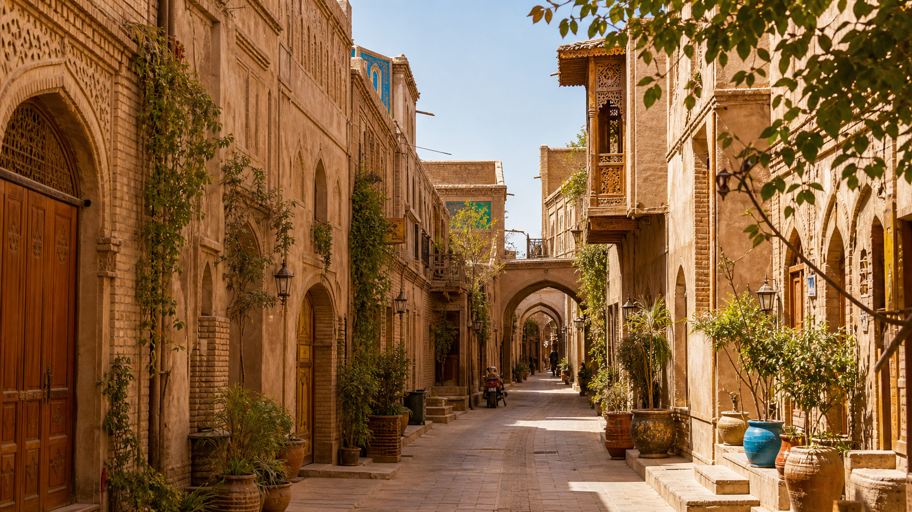

"不到喀什，不算到新疆"，丝绸之路上的千年活化石。
喀什，全称"喀什噶尔"，位于新疆西南部，是中国最西端的城市，也是古代丝绸之路南北两道的交汇点。喀什老城是中国唯一以伊斯兰文化为特色的迷宫式城市街区，已有2000多年历史。艾提尕尔清真寺是中国最大的清真寺，而老城巷弄里维吾尔族匠人的铜器铺、花帽店、乐器坊延续着千年的手工艺传统。百年老茶馆里，维吾尔老人弹着热瓦普、喝着茯茶，时光仿佛凝固在西域的旧梦里。

D1上午参观艾提尕尔清真寺（周五主麻日最热闹），之后漫步老城巷弄——喀什老城分为东区和西区，东区更生活化，西区手工艺店铺更多。中午在百年老茶馆喝茶，下午逛职人巴扎（喀什大巴扎），这里是中亚最大的集市。D2前往香妃墓（阿帕克霍加麻扎），下午探访高台民居旧址。D3如逢周日，一定要去城郊的周日牲畜巴扎——这是南疆最原生态的民俗体验。
1. 喀什与北京时间有约2.5小时的实际时差，当地人通常10点后才开始一天的活动。
2. 进入清真寺需脱鞋，女性需遮盖头发和手臂。
3. 喀什美食丰富：烤包子、抓饭、羊肉串、鸽子汤、玛仁糖……建议在色满路和人民西路一带寻找地道馆子。
4. 老城巷弄错综复杂，但地上铺的六角砖表示"此路不通"，四角砖表示"此路通"。
白沙湖和喀拉库勒湖（帕米尔高原入口，车程约3小时）、塔什库尔干（石头城和金草滩，车程约5小时）、慕士塔格峰（海拔7546米的"冰山之父"）。